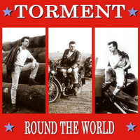

Torment - Round The World (Album, 1989)
01 - Route (4:49)
02 - Psycho (3:06)
03 - Laser Head (2:10)
04 - Love To Drink (3:20)
05 - Zodiac Revolution (2:47)
06 - Hideaway (4:15)
07 - Good To Be True (1:55)
08 - Kicked Down Low (3:27)
09 - Reach Out (3:28)
10 - Sail Away (2:25)
11 - Eye For An Eye (3:08)
12 - Catch 22 (2:22)
13 - Twenty Flight Rock (2:08)
© Nervous Records :: [NERD 050]
Notes
United Kingdom, England.
Simon Brand - Vocals, Guitar
Simon Crowfoot - Bass, Backing vocals
Kevin Haynes - Drums, Backing vocals
Engineer - Ace Dyamond
Engineer, Musically Directed By - Marcie Summers
Producer, Mixed By - Richard Silverthorn
Songs are written-by (here and further: or credited to) Simon Brand: "Psycho", "Laser Head", "Love To Drink", "Zodiac Revolution", "Good To Be True", "Kicked Down Low", "Reach Out"
Song is written-by Simon Crowfoot: "Catch 22"
Songs are written-by Crowfoot/Brand: "Hideaway", "Sail Away", "Eye For An Eye"
Song is written-by Cochran/Fairchild: "Twenty Flight Rock"
reference information: Discogs®
Review
005/366 (Project 366)
Psychobilly. Soft psychobilly. Speed (neo)Rockabilly. Torment. Rock and Roll. Well, this is the production of Nervous Records! That says a lot. Recognizable sound and concept. Always interesting, often different, surely experimental!
I like sound of 80's UK Psychobilly. It is diverse from band to band, of course, but this is one of lovely points too. With Torment and "Round The World" - I like their still youth fervor. The album sounds pretty different. Sometimes with taste of garage sound, sometimes too much experimental, sometimes with completely bonkers smack. Some songs are really matured, though. However, there is always eagerness to make their idea with the best that they can do. And, all in all, it is a good example of old school Psychobilly and revival times. With huge forms of heavy rockin' and rollin', trial trips with wacky romp and with great influence of classic rockabillies. Raging slapping, bumping, bopping and hitting! Courageous tunes and dashing singing. What is else need for having some fun. Well, there are some things...
Lets roll. Album starting with fancy road intro of "Route 66". This is likely a kind of 'bonus' for the digital release of "Round The World" by Nervous Records (I bought it via digital channel). Track is pretty smoky and even rolling rock until doublebass start slapping! Then this is already a more gradual bop! However the full track is inspired by experimental sound of the late 80s and chic of Nervous Records with echoes and effects. Tune flows from an abstract rhythm into a distinct Rock'N'Roll with sleazy vocal. But too quiet for Psychobilly. That is not a case for the original first track "Psycho" (second track here). Dashing, scratching.. walking even panting heavily. The voice is as raw and rough as in perfect 70's UK punk-rock. That is so good for such a roll and p-s-ychooo tune! "Laser Head" starts almost like a laser hammer. Thresher-crusher. The feeling that the instruments will be shattered and that they themselves can hardly withstand the load. But it is a really nice continuation of the previous track. "Laser Head" even featured cool guitar solos and wiggles. A very plain motive and something that was especially common with old school psychobilly. Maybe even high-speed crazy (neo)Rockabilly.
"Love To Drink" is alcotuned melody. Swaying and amusing with jerky gusts. And even with weird instrumental sayings out of place. Voice is good - both thematically and pleasantly. Yeee! Such a moony country folk sound a bit if to ignore designed dud and psychobilly itself. The rattling motives are almost forgotten with the powerful start of the fifth track "Zodiac Revolution". Rock'n'Roll aggressively, assertively, powerfully and without compromise. Chanting lyrics with ballad tone, also speed and furious shade. Instrumental part is the most memorable despite slightly bumpy sound (but adds even extra gloss). Suitable for psychos! Dancefloor is stomped off! And suddenly puzzled with the advent of "Hideaway" - ambient new wave composition. Well, yes there is still Torment. With brittle voice, but very tragic like the melody of this experimental sound itself. With rawk "HIDEAWAY" chorus and backing vocals. So, pretty crazy. With influence of Metal ballads, perhaps. And even doom a bit. Enthralling thing.
Seventh track "Good To Be True" with quite experimental sound of rhythm and tune itself. Maybe synth-pop or electro. And there are feelings to get exact 'boom' and wow! But.. well, good to be true. More kind as a demo. But with a certain idea and understanding of what to play. A lot of interesting sketches, which are performed as desired. Probably the band is proud to be true with that! Eighth song "Kicked Down Low" with intro from classical pieces. Surprisingly replaced very harmoniously by classics of Rockabilly and fifties pop. But still psycho. Pretty nice track with good structure, motive, streams and waves. Fifties rock'n'roll that streamlined to (neo)Rockabilly. With guitar solos the situations just heats up more. And the rest of the song is no longer possible to listen calmly. All in attention and involved in the sound and chorus of lovely manner. But too much sudden end! Then ninth track "Reach Out" sounds modern even today. Clearly old school that bring ideas to up to current musicians. With clumsy sound occasionally. And even a little boring because of its protractedness - but if you will listen to it loud - well, pretty sure that result is great. Experimental touches complement a fairly common style of performance and track is fully of the style of this Torment album. The song also featured a good placeholder for sing-a-long with crowd! Tenth "Sail Away" is my favourite. Speed up and saturation with bias in hillbilly and rockabilly of Teds flavour. It sounds very funny - to take the track too seriously. Marching tune with some forms and even going wild rhythm! "Eye For An Eye" with an overwhelming sound that combined all the advantages of previous tracks. Rigidity, experimentalism, rhythm, slaughter and even some lyricism. With a bit bogey bop motion. Gritting, rattle, crackle, clicks .... oh but rocking. Twelfth track "Catch 22" with sweet duration "2:22". Song is thematically good, softened Psychobilly with thoroughgoing (neo)Rockabilly. Crazy, wild, ouch!
Pretty regular album, but due to the energy and expressive filing sounds peppy. And also due to various experiments and effects, it sounds quite diverse, while maintaining a common touch. Many tricks are reused very often. Although there are some points of particular interest. "Twenty Flight Rock" craze of lounge act. Tender bonkers! Come on, come on, come on! Singing along! Happy wailing, Rock! But not what you thought. Clever bonus for the ablum's tracklist!
As a result, it feels like after reading a book. It is not entirely clear whether there is a passion to re-read it or not, if everything was clear in it. Tricky to say - is any of this memorable?! But there was a strong desire to read it to the end!